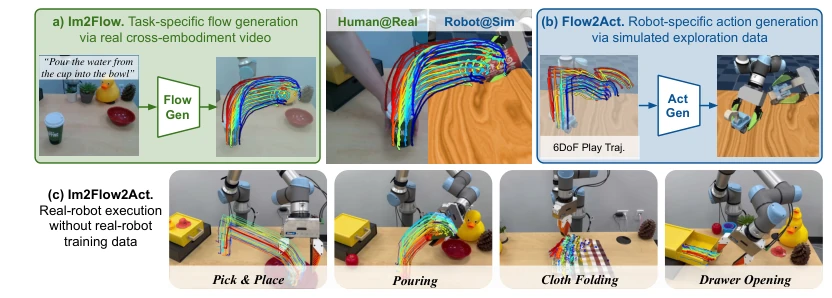
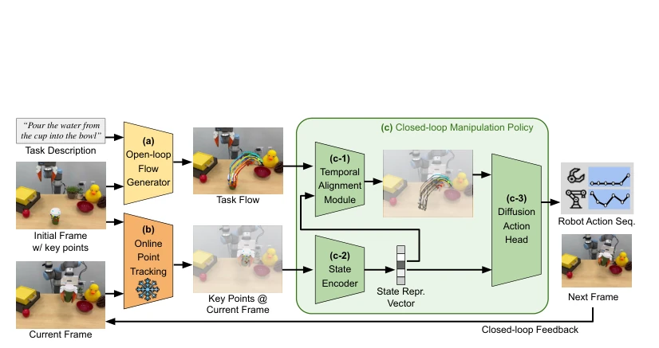
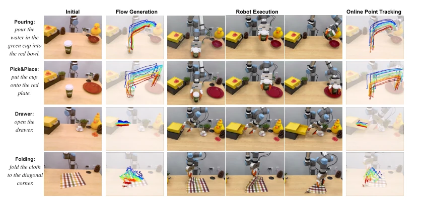
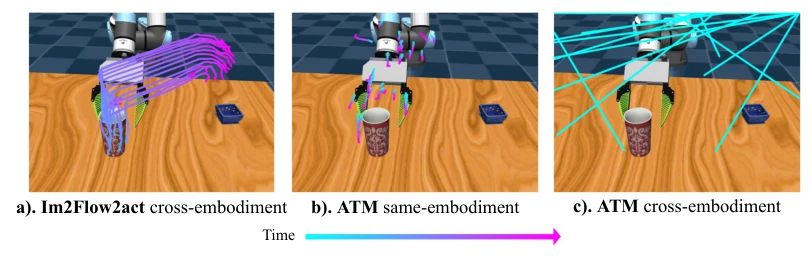
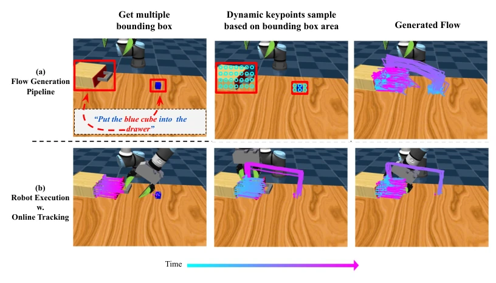
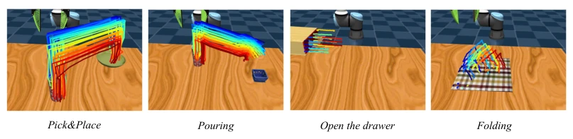
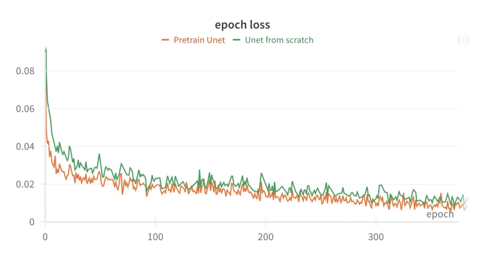
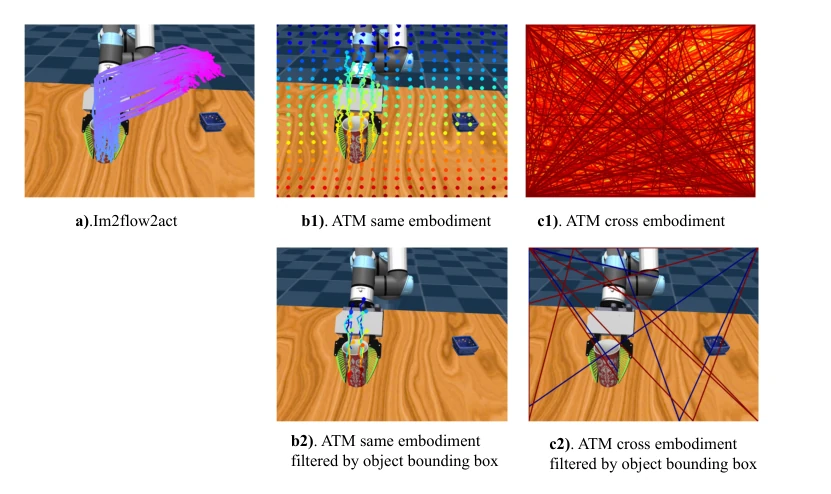
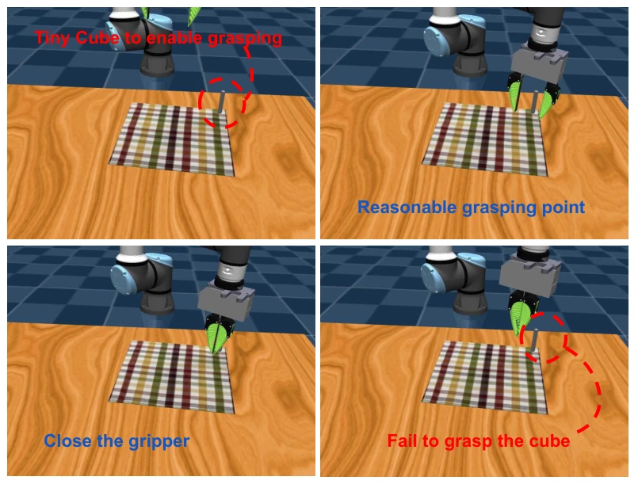

这篇论文试图用“物体光流”作为万能接口，把人类视频和机器人仿真数据串起来，确实有点东西。不用真机训练数据就能搞定刚体、铰链甚至软体操作，听起来像是机器人学习的“圣杯”。但仔细想想，用 2D 光流代替 3D 动作，本质上是在用二维信息猜三维物理，倒水任务里 Z 轴精度不够就是硬伤。作者虽然号称“可扩展”，但折叠衣物在真机上的成功率直接腰斩，说明仿真到现实的鸿沟并没被光流完全填平。另外，依赖预训练视频生成模型（AnimateDiff），计算开销和生成稳定性也是隐忧。总的来说，是个聪明的工程 trick，但物理本质的抽象还没做到位。
This paper attempts to employ "object flow" as a universal interface to bridge human videos and robot simulation data, which indeed holds merit. Achieving rigid, hinge, and even soft object manipulation without real robot training data sounds like the "holy grail" of robot learning. However, upon closer inspection, substituting 3D actions with 2D flow is essentially inferring 3D physics from 2D information; the insufficient Z-axis precision in the pouring task constitutes a fatal flaw. Although the authors claim "scalability," the success rate for folding clothes on real robots was halved, indicating that the sim-to-real gap has not been fully bridged by flow. Furthermore, reliance on pre-trained video generation models (AnimateDiff) raises concerns regarding computational overhead and generation stability. Overall, it is a clever engineering trick, but the abstraction of physical essence remains incomplete.
The key to scaling robot learning lies in leveraging multi-source data, yet existing approaches each have significant drawbacks. Methods based on cross-embodiment video learning [6, 7, 8] are constrained by embodiment differences; kinematic disparities between human arms and robotic arms hinder policy transfer. Methods based on simulation data [1, 2] face a severe sim-to-real gap, particularly for contact-rich manipulation tasks. Although ATM [14] attempts to use flow as an interface, the mesh flow it generates includes embodiment motion and still requires real robot data to align distributions. Heuristic strategies [15, 17] can utilize flow but rely on manual localization or 3D flow estimation, resulting in poor generalization and insufficient autonomy. Therefore, there is an urgent need for a unified interface that decouples embodiment and task, connecting real videos with simulation data. Im2Flow2Act is designed to address the problem of acquiring cross-domain skills without requiring real robot training data.

Figure 1: Flow as the Cross-domain Manipulation Interface. In Im2Flow2Act, we utilize object flow to bridge the domain gap between both embodiments (human v.s. robot) and training environments (real v.s. simulation). Our final system is able to leverage both a) action-less human video for task-conditioned flow generation and b) task-less simulated robot data for flow conditioned action generation, results in c) a language- conditioned multi-task system for real-world manipulation tasks but without the need of real-robot training data.
The system consists of two parts: the flow generation network and the flow-conditioned policy. First, the flow generation network utilizes Grounding DINO to locate objects and TAPIR to track keypoints, transforming task descriptions and initial frames into a complete object-centric task flow. Unlike the mesh flow of ATM [14], this generates only object motion to avoid embodiment interference, and compresses into the latent space of Stable Diffusion [19] for training to enhance efficiency. Second, the flow-conditioned policy is trained entirely on simulation exploration data. It includes a state encoder that fuses current keypoints with initial 3D coordinates; a temporal alignment module predicts the remaining task flow based on current progress to address distribution differences between simulation and real flows; finally, a diffusion action head generates 6DoF action sequences. During inference, the generation network first produces the complete flow, and the policy then executes closed-loop control based on real-time tracked keypoints without fine-tuning on real robot data. This design effectively reduces distribution differences across embodiments and environments, enabling the policy to be deployed directly in real-world scenarios.

Figure 2: Im2Flow2Act Overview. Given a task description and the initial frame, the flow generator (a) generates a complete object flow for the task (i.e., task flow). The closed-loop manipulation policy (c), takes in the task flow and the keypoint location at the current frame to infer the robot actions. Within the manipulation policy, a temporal alignment module (c-1) is used compare task flow and keypoint location at the current frame to infer remaining task flow (flow in color) for the diffusion head (c-3) to generate actions. an interface. We achieve an average success rate of 81% across four real-world tasks, including those involving rigid, articulated, and deformable objects without any real-world robot data for training. 2 Related Work
Evaluated four tasks (pick, pour, open drawer, fold clothes) in simulation and the real world. Data sources include heuristic exploration data in simulation and real human demonstration videos. Comparison baselines include ATM [14], heuristic strategies [15, 17], etc. Results show that Im2Flow2Act achieves an average success rate exceeding 90% in simulation and 81% on real robots, significantly outperforming ATM and heuristic methods. Ablation studies indicate that the temporal alignment module is crucial for real robot deployment; upon removal, the success rate in the pouring task drops to 0%. Additionally, the object-centric flow design is more robust to embodiment differences than uniform mesh flow. However, in the folding task, due to differences between soft-body simulation and real robot dynamics, the success rate drops significantly, exposing the limitations of 2D flow in complex physical interactions.

Figure 4: Task and results: We conducted evaluations on four tasks involving rigid, articulated, and de- formable objects. The initial scene, flow generation visualizations, and online point tracking during inference were captured using the RealSense camera. Visualizations of the robot’s execution were recorded from a dif- ferent angle to provide a clearer view of the robot execution.

Figure 6: Flow generation comparison during robot deployment. We compare Im2Flow2Act and ATM side by side in the pouring task. Im2Flow2Act (a) demonstrates its robustness in the presence of the UR5 in the visual input, generating high-quality object-centric task flows. In contrast, ATM generates noisy flows (c) when learning from sphere demonstrations and only performs well (b) when learning from same-embodiment demonstrations. Notice, we only visualize the query points with high variance for ATM. As ATM only predicts the future N steps and the mug will not move under the prediction horizon, therefore there is no flows on the mug in sub-figure b. Please refer to Fig. 10 for the case robot is more close to the object. We visualize the complete grid flow with object moving under the predicti
其他图片Other Figures

Figure 7: Long-Horizon Task with multi-objects: Im2Flow2Act is capable of generating flows (a) for long- horizon tasks involving multiple objects. Our pipeline starts with getting multiple bounding box for objects of interest and dynamically sampling the initial keypoints proportional to the bounding box area. The sampled keypoints are then concatenated to form a H × W rectangular flow image as the flow generation model con- dition. Our manipulation policy (b) effectively follows the generated flow to successfully complete the tasks. For videos, please visit our anonymous website: https://im2flow2act.github.io/

Figure 8: Generated Flow in simulation: We visualize the generated flow with high-variance for four tasks in simulations. We use the motion filter to filter the flow with high-variance. More details for motion filters can be found in appendix G.2. The keypoints has been down-sampled to provide better visualization. Note that in the real world, we train the flow generation model using human demonstrations.

Figure 9: Unet Pretrain vs Scratch: The training loss converges much faster for pretrain Unet. The visualized loss is not being smoothed.

Figure 10: Flow generation comparison during robot deployment (grid flow and filterd with object bound- ing box) We compare Im2Flow2Act and ATM side by side in the pouring task. ATM generates noisy flow when learning from cross-embodiment demonstrations (c1,c2). In contrast, Im2Flow2Act generated high-quality flow even when learning from cross-embodiment demonstrations (a). Notice, the visualized flow from Im2Flow2Act is after processed by motion filters. The initial keypoints is uniformally sampled from the bounding box and we do not manually select the initial points.

Figure 11: Policy rollout in Deformable Environment. We attach a tiny cube (1cm x 1cm x 9cm) to enable robot grasp deformable objects. The generated flow guides the policy toward an appropriate grasping point; however, it fails to grasp the tiny cube, resulting in task failure.